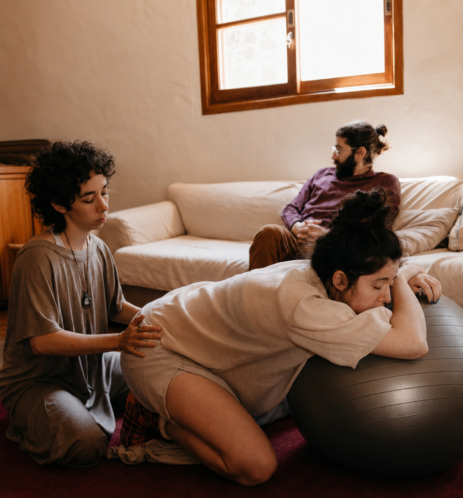

Oi, eu sou a Anahí.
Minha missão é devolver o protagonismo do parto às mulheres. Acredito que o nascimento é um portal sagrado que merece ser atravessado com awareness, respeito e as ferramentas emocionais corretas.
Com formação especializada em obstetrícia humanizada, acompanho famílias para que a chegada de um novo membro seja uma experiência de cura e celebração, minimizando intervenções desnecessárias e maximizando o bem-estar.
Cuidado integral em todas as fases
Cada serviço é pensado para oferecer a segurança e o afeto que você e seu bebê precisam.

Suporte Pré-Natal
Encontros para preparação física e emocional, execução do plano de parto e desconstrução de medos.
Ver detalhes arrow_forward
Parto Humanizado
Acompanhamento presencial durante todo o trabalho de parto, oferecendo conforto e suporte contínuo.
Ver detalhes arrow_forward
Puerpério Imediato
Apoio nas primeiras horas e dias após o nascimento, auxiliando na adaptação e cuidados iniciais.
Ver detalhes arrow_forward
Consultoria de Amamentação
Orientação técnica para uma amamentação tranquila, manejo de dificuldades e pega correta.
Ver detalhes arrow_forward
Cuidados com o RN
Treinamento prático para pais de primeira viagem: banho, sono, trocas e rotina do bebê.
Ver detalhes arrow_forward
Rodas de Apoio
Espaço de troca entre gestantes e mães, criando uma rede de apoio e compartilhamento.
Ver detalhes arrow_forwardPor que ter uma doula?
A doula não substitui a equipe médica; ela completa o cuidado focando no seu bem-estar emocional e físico.
Apoio Emocional
Acolhimento contínuo, escuta ativa e redução da ansiedade. Transformamos o medo em confiança através da presença constante.
Conforto Físico
Uso de métodos naturais para alívio da dor, massagens, técnicas de respiração e sugestão de posições que facilitam o parto.
Information Based on Evidence
Esclarecimento de dúvidas técnicas, auxílio na execução do plano de parto e suporte para tomadas de decisão conscientes.
Relatos de Amor
"Ter a Anahí ao meu lado foi a melhor decisão que tomamos. Ela trouxe calma quando eu estava perdida e força quando achei que não conseguiria. Meu parto foi transformador."
Mariana S.
"O acompanhamento pré-natal me deu segurança para entender cada fase do meu corpo. A consultoria de amamentação salvou meus primeiros dias com a pequena Laura."
Juliana K.
"Anahí é sinônimo de paz. Ela cuida da família inteira. Meu marido se sentiu muito mais seguro participando de tudo com as orientações dela. Recomendo para todos!"
Beatriz & Lucas
Acompanhe no Instagram
@anahidoula